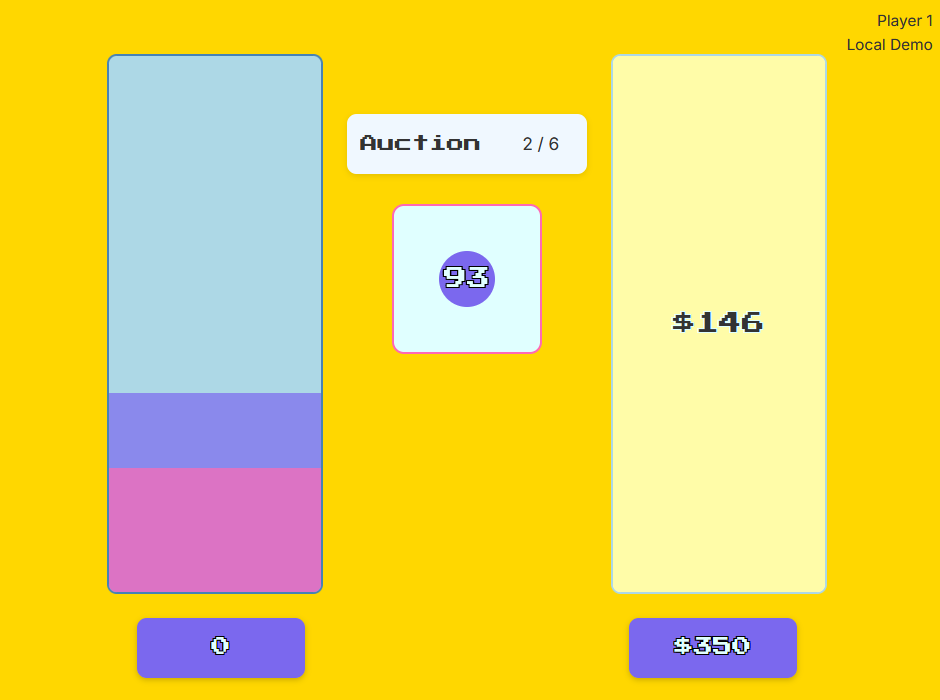

My Research Projects
Welcome to my research portfolio! Here you'll find an overview of my projects, categorized by their primary focus areas. Each tile provides a brief summary, and you can click on any project to delve deeper into its methodology, findings, and implications.
Human-AI Collaboration
Cognitive Modeling & Decision Science
Discrete Choice vs Rating Scales
Comparing discrete choice and rating scale decision elicitation methods using ground-truth perceptual stimuli, with implications for understanding human perception and decision-making processes.
Competitive Decision Making in Dutch Auctions
Examining competitive decision making in Dutch auctions among groups through the lens of Prospect Theory and other cognitive models, focusing on factors influencing group performance and individual bidding strategies.
Perception & Applied Vision
Quantitative measure of the ABC features used for melanoma identification
Developing a continuous quantitative measure of the perceptual strength of shape asymmetry, border irregularity, and color variance (ABC features) for melanoma identification, crucial for both human and AI diagnostic accuracy.
Wheel of Fortune: Unbiased Mental Representations
Examining unbiased mental representations of symbolic numerals, using a 'Wheel of Fortune' paradigm to investigate how humans process and represent numerical information without explicit biases.